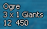
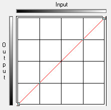
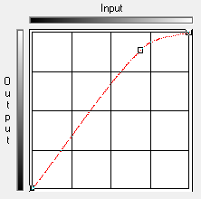
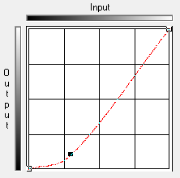
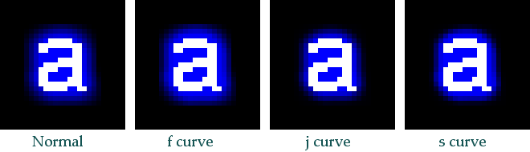
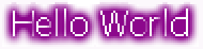
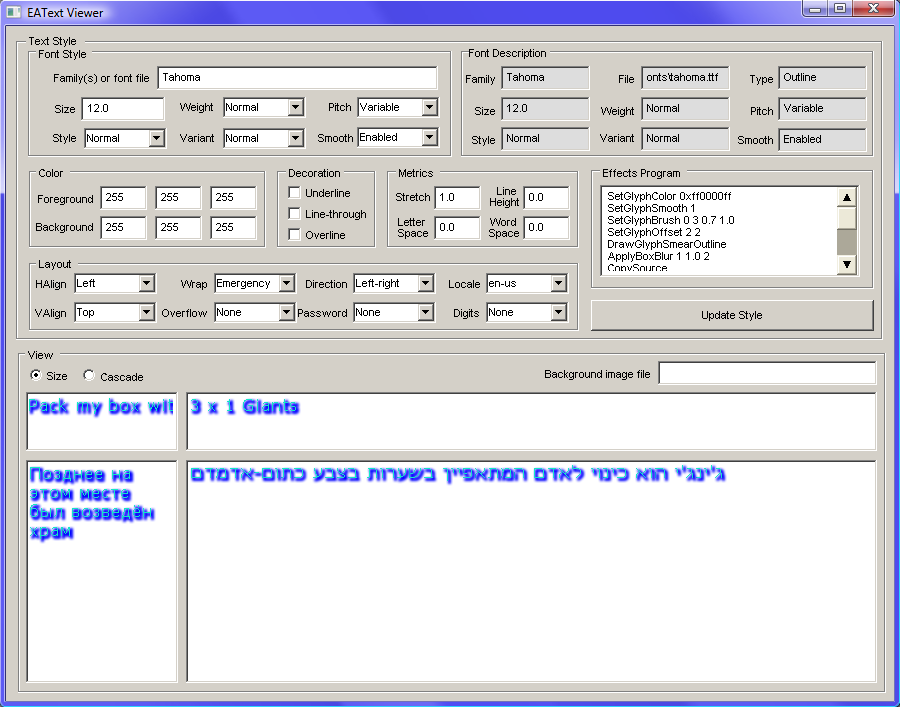

Effects
EAText 1.05.00 introduced the new runtime effects system. The previous effects system will remain available for a period of time for backward compatibility. The new effects system is instruction list-based as opposed to being struct/enum-based like the previous system. The new instruction list-based system is based loosely on workflow in image editing tools such as Photoshop. This system bears some resemblance to a GPU pixel shader program, though in this case the unit of operation is a glyph as opposed to being a fragment (pixel).
Hello World
Before we get very far describing the effects system in detail, we would like to present the EATextEffects version of a hello world program. The following is a basic effects program in string form, with commentary on each instruction on the right side.
SetGlyphColor 0xff0000ff
|
Set the current color to an ARGB representing solid blue. |
SetGlyphSmooth
|
Enable anti-aliasing. |
DrawGlyph
|
Draw the current glyph into the floating layer. |
| Merge |
Copy the floating layer to the base layer. |
The program above is applied to every glyph, and results in simply drawing antialiased blue text. You don't need an effects program to draw this, as you can accomplish this with a regular EAText OutlineFont. We'll provide more elaborate examples of things like outlines and shadows below.
Using Effects
To use EAText Effects, you need to do three things:
- Create effects
- Register effects
- Create OutlineFonts for the effects
Step 1.
There are two ways to create effects: programmatically or via a string with the CreateInstructionList function.
Programmatic creation:
EffectsState es;
es.SetGlyphColor(0xff0000ff);
es.SetGlyphSmooth(true);
es.SetGlyphBrush(EA::Text::kBSRound, 3, 0.7f, 1.0f);
es.SetGlyphOffset(2, 2);
es.DrawGlyphSmearOutline();
es.ApplyBoxBlur(1, 1.0, 2);
es.Merge();
String creation:
EffectsState es;
EA::Text::CreateInstructionList("SetGlyphColor 0xffffffff\n"
"SetGlyphSmooth 1\n"
"SetGlyphBrush 0 3 0.5 0.5\n"
"DrawGlyphSmearOutline\n"
"ApplyCurve 1 1\n"
"Merge\n"
"Clear\n"
"SetGlyphColor 0xffffffff\n"
"SetGlyphSmooth 0\n"
"DrawGlyph\n"
"Merge\n", es);
Step 2.
To register an effect with the FontServer, you use the FontServer::AddEffect function. Here is some example code:
pFontServer->AddEffect(0x12345678, es.mInstructionList, es.mInstructionListSize);
.
.
pFontServer->RemoveEffect(0x12345678);
Effects can be added and removed at any time. Once any effects are registered, you can create fonts with the effects either directly or indirectly via the FontServer.
Step 3.
There are two ways to create effects fonts: direct creation and indirect creation via the FontServer.
Direct creation of an effects font (error checking omitted):
EA::Text::OutlineFont* pFont = EATEXT_CA_NEW(OutlineFont, pCoreAllocator, "OutlineFont")(pCoreAllocator);
pFont->AddRef();
pFont->Open(pTrueFontFileStream);
pFont->SetTransform(16.f);
pFont->SetEffect(0x123456768);
pFont->Release();
Indirect creation of an effects font via the FontServer:
EA::Text::TextStyle textStyle;
wcscpy(textStyle.mFamilyNameArray[0], L"Arial");
textStyle.mfSize = 12;
textStyle.mEffect = 0x12345678;
EA::Text::OutlineFont* pFont = pFontServer->GetFont(&textStyle);
pFont->Release();
If you are using multi-colored effects then you may find that you need to use ARGB GlyphCache instead of a DXT GlyphCache, as the latter may result in undesirable coloring artifacts due to the lossy compression involved in DXT.
Instruction Summary
The following table summarizes the instructions available as of this EAText 1.05.00. The instructions on the left are enumerated values defined in EATextEffects.h.
| Instruction |
Action |
Arguments |
Notes |
kEISetExpansion
|
Sets expansion parameters |
uint32 gutter, max glyph expansion, in the range of [0, 128] |
Sets the base layer gutter (buffer size around the glyph for blurs, etc.), and sets the max pixels a glyph image can expand due to blurs, glows, etc. Must be called early in a program. Default values are kGlyphGutterSizeDefault and kMaxExpansionDefault (see EATextEffects.h). This instruction is for performance reasons. The first value limits the memory used for compositing; the second limits the memory used by the resulting glyph. |
| kEISetGlyphMinAlpha |
Sets min alpha for glyph bounds |
uint32_t A, in the range of [0, 255] |
Sets the color below which a pixel is not considered part of a glyph. Used for calculating glyph bounds after effects are applied. |
| kEISetGlyphColor |
Set current color |
uint32_t ARGB color, where each component is in the range of [0, 255], or [0, 0xff] |
Sets color for next glyph draw of any type (normal, blur, outline). |
| kEISetGlyphOffset |
Move glyph |
int32_t dx, dy, in the range of [-64, +64] |
Moves glyph draw position relative to baseline pen position. |
| kEISetGlyphHSpace |
Add space to glyph sides |
int32_t left space, right space, in the range of [-64, +64] |
Adding space on the left moves the glyph to the right relative to the pen. Adding space on the right increases the advance (moves the next glyph to the right). Usually you would need this only once for an instruction set. |
| kEISetGlyphVSpace |
Add space to glyph sides |
int32_t top space, bottom space, in the range of [-64, +64] |
Adding space on top increases the ascent and line height. Adding space on bottom decreases the descent value and increases the line height. Usually you would need this only once for an instruction set. |
| kEISetGlyphSmooth |
Enable/disable smoothing |
bool enable |
The next glyph draw of any type (normal, blur, outline) uses this. |
| kEISetGlyphBrush |
Set brush |
uint32_t shape, size, hardness, opacity |
Usually one of enum BrushShape. Used only for drawing outline, but may be used for other purposes in the future. |
| kEISetTargetImage |
Set filter target image |
uint32_t targetImage |
Sets the image action destination: either kETIFloat or kETIBase. Default is kETIFloat. Most of the time you want to use kETIFloat. |
| kEISetTargetMask |
Set filter target mask |
uint32_t maskFlags |
Set the filter raster op so that it applies to color alpha, or both. |
| kEIDrawGlyphSmearOutline |
Draw glyph outline smear |
<none> |
Draws an outline smear with the a pattern that matches the current brush and uses other settings. |
| kEIDrawGlyphBrushOutline |
Draw glyph outline w/ brush |
<none> |
Draws an outline directly with the current brush and other settings. |
| kEIDrawGlyph |
Draw glyph |
<none> |
Draws a glyph with the current settings. |
| kEIClear |
Clear target image |
<none> |
Clears the target image (should always be kETIFloat), in preparation for another drawing layer. |
| kEIApplyCurve |
Apply brightness s, j, or f curve |
uint32_t curveType, float strength, in the range of [0.0, 3.0] |
Applies a brightness curve to the target image. j curve makes dark things darker, f makes lighter things lighter, s does both. See below for pictures. |
| kEIApplyBoxBlur |
Apply box blur |
float radius, gain, uint32_t pass count |
Implements a basic box blur on the target image. Gain is a multiplier in the range of [0, infinity] which reduces (gain < 1) or increase (> 1) the blurred pixel volume. A value > 1 causes a blurred glyph to not fade away so much. A value of 1 has no effect. |
| kEIMerge |
Copies the source glyph to dest |
<none> |
Copies the floatinglayer with the base layer via a merge-like blend. Leaves source as-is. This operation is similar to Photoshop merge layer down, but preserves the top layer instead of making it go away. |
| kEICallUser |
Call user function |
uint32_t user-defined id |
Calls user function. |
Compositing Model
EAText effects are implemented via a compositing scheme that bears some resemblance to the layered compositing found in image editing programs like Photoshop. The EAText effects version of this is much simpler and much more limited in functionality. There are two layers: a colored base layer, and an alpha floating layer. Most operations (glyph drawing, blurring, curve application) are done on the floating alpha layer, and the results are merged onto the colored base layer, much like a layer merge in Photoshop.
Let's walk through an effects program and describe what is happening, step by step:
SetExpansion 6 3
|
Sets the base layer so that it has a 6 pixel buffer around the glyph to handle offset draws, blurs, etc. And set it so that the glyphs grows its bounds no more than 3 pixels due to blurring (not offsetting). This instruction is for performance reasons. The first value limits the memory used for compositing; the second limits the memory used by the resulting glyph. |
SetGlyphColor 0xff0000ff
|
Set the glyph color to an ARGB value. When the floating alpha layer is merged onto the base layer, this color will be applied. If the A is less than 0xff, the floating layer will be merged onto the base layer with some transparency. |
SetGlyphSmooth 1
|
Set the glyph to be anti-aliased when drawn to the floating layer. Recall that the floating layer is strictly an alpha channel. |
SetGlyphOffset 2 2
|
Sets the glyph to be drawn two pixels to the right and two pixels below where it normally would be drawn. This results in a shadow. |
| SetGlyphBrush 0 3 0.7 1.0 |
Sets the kind of smear to be used in the following step. 0 means use a round brush, 3 means use a brush with a diameter of 3, 0.7 means to use a brush that is not a solid circle but a fuzzy-edged circle. The 1.0 means to make the brush have no additional opacity applied to its already fuzzy-edged circle. |
DrawGlyphSmearOutline
|
Causes a glyph to be drawn on the floating layer via repeated drawings on top of each other in a pattern that matches the brush. This will result in a certain kind of smudged glyph. |
ApplyBoxBlur 1 1.1 2
|
Applies a box blur to the floating layer whereby the blur radius is 1, a opacity gain of 1.1 is applied (makes blur more solid), and the blur is applied twice in a row. |
Merge
|
Merges the floating layer onto the base ARGB layer with the current glyph color ARGB. |
Clear
|
Clears the floating layer. You would typically do this if you want to draw a new independent glyph on the floating layer. |
SetGlyphColor 0xff12e8c7
|
Sets the glyph color to a new ARGB value. |
SetGlyphSmooth 0
|
Disable glyph smoothing (anti-aliasing). |
SetGlyphOffset 0 0
|
Restore the glyph offset to its original non-offsetted position. |
DrawGlyph
|
Draw a glyph on the floating layer. |
Merge
|
Merge the floating layer onto the base ARGB layer with the current glyph color ARGB. This merge will occur with the previously drawn glyph and will result in the glyph being drawn on top of the previously merged glyph shadow. |
| SetGlyphHSpace 1 1 |
Causes the glyph metrics to have one extra leading pixel and one extra trailing pixel, but has no effect on the glyph image itself. You would do this if you wanted to space glyphs out horizontally, especially if the effect causes the glyphs to expand a lot. |
EAText caches effects glyphs, so typically the effects composition isn't happening much or at all during runtime, since the glyphs were cached upon first generation. An alternative to using EAText effects at runtime is to use them (or Photoshop) with BitmapFonts, typically bia the BitmapFontEditor tool. With bitmapped effects fonts, all effects are generated outside the game in the data pipeline.
Shadowed Text
Shadowed text is implemented via the ApplyBoxBlur, SetGlyphOffset, and possibly SetGlyphHSpace instructions. Here are some examples.
|
SetGlyphColor 0xff000000
SetGlyphSmooth 0
SetGlyphOffset 1 1
DrawGlyph
Merge
Clear
SetGlyphColor 0xff277DFF
SetGlyphOffset 0 0
DrawGlyph
Merge |
Here's a thin hard shadow, drawn with non-anti-aliased text and non-anti-aliased single pixel shadow. |
|
SetGlyphColor 0xff404040
SetGlyphSmooth 1
SetGlyphOffset 2 2
DrawGlyph
ApplyBoxBlur 2 1 2
Merge
Clear
SetGlyphColor 0xff0E5EB8
SetGlyphOffset 0 0
DrawGlyph
Merge
|
Here's a similar approach to above but drawn with an anti-aliased text and shadow. |
|
SetGlyphColor 0xff0000ff
SetGlyphSmooth 1
SetGlyphBrush 0 3 0.7 1.0
SetGlyphOffset 2 2
DrawGlyphSmearOutline
ApplyBoxBlur 1 1.0 2
Merge
Clear
SetGlyphColor 0xff12e8c7
SetGlyphSmooth 0
SetGlyphOffset 0 0
DrawGlyph
Merge
SetGlyphHSpace 1 1 |
Here's neon text with a colored shadow. |
|
SetGlyphOffset 2 2
SetGlyphHSpace 1 1
SetGlyphColor 0xff000000
SetGlyphSmooth 1
SetGlyphBrush 0 3 0.5 .5
DrawGlyphSmearOutline
ApplyBoxBlur 2 1.0 2
Merge |
Sometimes you want a standalone shadow font which you would typically pair with an standard overlay font. Here's an example of such a shadow font. Note that the font here has a built-in offset (SetGlyphOffset) and glyph horizontal spacing expansion (SetGlyphHSpace). |
Outlined Text
Outlined text is frequently used for text drawn on the screen against a background that varies in color, such as a 3D game view. With EAText effects, outlined text is typically implemented via the DrawGlyphSmearOutline or DrawGlyphBrushOutline instructions, though an outline derived by a box blur and brightness curve is feasible as well. EAText 1.05.00 doesn't support DrawGlyphBrushOutline, though a future release is intended to support it.
Here we show some examples of outlined text programs.
|
SetGlyphColor 0xff4000c0
SetGlyphSmooth 1
SetGlyphBrush 0 3 .5 1
DrawGlyphSmearOutline
ApplyCurve 0 1
Merge
Clear
SetGlyphColor 0xffff00ff
DrawGlyph
Merge
SetGlyphHSpace 1 0 |
This is a basic thin outline. |
|
SetGlyphColor 0xff061FB5
SetGlyphSmooth 1
SetGlyphBrush 0 5 1 .8
DrawGlyphSmearOutline
Merge
Clear
SetGlyphColor 0xff5ECDF6
DrawGlyph
Merge
SetGlyphHSpace 2 1 |
This is a medium outline. |
|
SetGlyphColor 0xff000000
SetGlyphSmooth 1
SetGlyphBrush 0 5 2 1
DrawGlyphSmearOutline
Merge
Clear
SetGlyphColor 0xfff00000
SetGlyphOffset 0 0
DrawGlyph
Merge
Clear
SetGlyphColor 0x80800020
SetGlyphOffset 1 1
DrawGlyph
Merge
SetGlyphHSpace 1 0 |
Here we have a medium outline with a highlight on the glyphs which give them some depth. |
|
SetGlyphColor 0xff000060
SetGlyphSmooth 1
SetGlyphBrush 0 3 1 1
DrawGlyphSmearOutline
ApplyBoxBlur 1 1.5 1
ApplyCurve 2 1
ApplyCurve 0 1
Merge
Clear
SetGlyphColor 0xffffFF60
SetGlyphSmooth 0
DrawGlyph
Merge
SetGlyphHSpace 1 0 |
Here's an example of a program that creates an outline via a blur and brightness curve. This results in an outline that is smoothly uniform but is not very hard. The internal lettering is hard-edged, but that's because disabled smoothing for the internal glyph. |
|
SetGlyphColor 0xff202020
SetGlyphSmooth 1
SetGlyphOffset 2 2
DrawGlyph
ApplyBoxBlur 2 1 2
Merge
Clear
SetGlyphOffset 0 0
SetGlyphColor 0xff0000c0
SetGlyphBrush 1 3 .7 .7
DrawGlyphSmearOutline
ApplyCurve 2 1
Merge
Clear
SetGlyphColor 0xff35E778
DrawGlyph
Merge
SetGlyphHSpace 1 1 |
Here we have an outline and shadow, with a small amount of horizontal spacing added. If the shadows are very heavy you may find you need to split fonts like this into two fonts: shadow + glyph. This technique is described below. |
 |
SetGlyphColor 0xff000000
SetGlyphSmooth 1
SetGlyphBrush 0 3 0 1
DrawGlyphSmearOutline
Merge
Clear
SetGlyphColor 0xffffffff
SetGlyphSmooth 0
DrawGlyph
Merge
SetGlyphHSpace 0 0 |
Here's some small text with a crisp outline used as a mockup test for EAText effects. |
|
SetGlyphColor 0xff0000ff
SetGlyphSmooth 0
SetGlyphBrush 0 5 1.0 1.0
DrawGlyphSmearOutline
Merge
Clear
SetGlyphColor 0xff00ffff
SetGlyphBrush 0 3 1.0 1.0
DrawGlyphSmearOutline
Merge
Clear
SetGlyphColor 0xffff00ff
DrawGlyph
Merge
SetGlyphHSpace 2 2 |
Here's an example of a program that creates a hard double outline. The result in this case isn't very pretty, but it demonstrates the effect. |
Glows
Glows are typically just shadows that aren't offset and which have color instead of being dark gray. The primary means of implementing a glow with EAText effects is via a colored blur. However, the user may choose to implement a glow as a gray image and use the rendering environment (color, pixel shader) to implement the glow color and luminescence.
Here's an example of a glow effects program:
|
SetGlyphColor 0xff60FA88
SetGlyphSmooth 1
SetGlyphBrush 0 3 0.7 1.0
DrawGlyphSmearOutline
ApplyBoxBlur 1 1.15 4
Merge
Clear
SetGlyphColor 0xffFFFF60
SetGlyphSmooth 0
DrawGlyph
Merge
SetGlyphHSpace 1 1 |
This is a basic thin font with a green glow. |
|
SetGlyphColor 0xffFF27C0
SetGlyphSmooth 1
DrawGlyph
ApplyBoxBlur 3 1.7 4
Merge
Clear
SetGlyphColor 0xffffffff
SetGlyphBrush 1 3 .7 .7
DrawGlyphSmearOutline
Merge
Clear
SetGlyphColor 0xffCD1948
DrawGlyph
Merge
SetGlyphHSpace 3 0 |
Here's another one. |
Text Crispness
You can adjust glyph and glyph shadow crispness with the ApplyCurve instruction. This instruction works like the Photoshop Curves feature, though it is currently limited to variations of f-shaped, j-shaped, and s-shaped curves. These curves modify the brightness or alpha values of images in useful ways.
| no curve |
f curve |
j curve |
s curve |
|  |
 |
 |
 |
Here's an example of these curves being applied in an EAText effect:

When applied to the floating glyph layer (a.k.a. kETIFloat), the ApplyCurve instruction always applies only to the glyph alpha, as the floating layer is an alpha-only layer. When applied to the base layer (a.k.a. kETIBase), the ApplyCurve instruction affects either the alpha or the color brightness, depending on the current EffectsChannelMask in effect (see kEISetTargetMask).
Here's an example of an effects program that uses ApplyCurve.
SetGlyphColor 0xff0000ff
|
Set the current color to an ARGB representing solid blue. |
DrawGlyph
|
Draw the current glyph into the floating layer. |
| ApplyBoxBlur 2 1.2 2 |
Blur the glyph. |
| ApplyCurve s 1.5 |
Apply s curve to the blur, making it crisper along its edges. |
| Merge |
Copy the floating layer to the base layer. |
User-defined Effects
EATextEffects allows the user to define effects via the CallUser instruction. This allows the user to do custom image operations via the EffectsPlugin interface. See EATextEffects.h for more. We can expand this documentation in the future if user effects become more relevant.
Glyph Overlap
When creating fonts with shadows or glows, you may find that glyph shadows overlap adjacent glyphs in a bad way:
|  |
SetGlyphColor 0xff8c078c
SetGlyphSmooth 1
SetGlyphBrush 0 3 0.7 1.0
DrawGlyphSmearOutline
ApplyBoxBlur 2 1.5 2
Merge
Clear
SetGlyphColor 0xffffffff
SetGlyphSmooth 0
DrawGlyph
Merge |
Aside from simply spreading apart the glyphs (via the SetGlyphHSpace effects instruction) there aren't many ways to solve this problem other than to implement a two-pass effect. To implement a two-pass effect, you create two fonts: a shadow font and a standard font. When you draw a string of text, you first draw the string with the shadow font, then with the standard font.
 |
SetGlyphColor 0xff8c078c
SetGlyphSmooth 1
SetGlyphBrush 0 3 0.7 1.0
DrawGlyphSmearOutline
ApplyBoxBlur 1 1.2 2
Merge |
|
SetGlyphColor 0xffffffff
SetGlyphSmooth 0
DrawGlyph
Merge |
|
(the result) |
Note that the two separate glyph effects programs above are simply the same thing as the one large effects program split into two. The same effect above can work for offset shadows.
Limitations
The current implementation of EATextEffects is fairly limited in what it can do. Here is a partial list of functionality you might want but which isn't natively supported:
| Feature |
Comment |
| Gradients |
Gradients would allow glyphs to have a multi-shaded look which adds lighting or depth.
Basic support of this would be fairly easy to add to EATextEffects in the future. |
| Subtraction/multiplication/etc. |
These would allow things such as making hollowed glyphs.
Basic support of this would be fairly easy to add to EATextEffects in the future. |
| Inner/outer glow |
These would allow for a 3D look and highlights.
This would require some effort to add to EATextEffects.
|
| Path stroke |
This would allow for some advanced glyph effects.
This would require some effort to add to EATextEffects. |
| Masks |
Masks would allow for certain kinds of useful compositing operations.
This would require some effort to add to EATextEffects. |
| Arbitrary layers |
This would allow for some kinds of advanced compositing.
Basic support of this would be fairly easy to add to EATextEffects, but it would have to be deemed important enough to warrant doing.
|
If you want to have more effects functionality that isn't currently supported, there are three primary solutions:
- Add a user-defined instruction via kEICallUser.
- Modify EATextEffects to add a new native instruction.
- Use a BitmapFont (via Photoshop and BitmapFontEditor) instead of an effects-based OutlineFont.
Another limitation of EATextEffects is that the colors are baked into the glyphs and cannot by dynamically changed at draw time except via environment coloring. You may want to take a given effect font and apply coloring to it dynamically so that the effects font may be reused with multiple colors. But how can you do this if you have a glyph that has two or more colors with shaded gradients? There are three fundamental solutions to this problem:
- Create a unique font for each color combination you want to use. See the Dynamic Effects section for a discussion of how to manage this.
- Use the multi-pass technique discussed in the Glyph Overlap section of this document to create a unique font for each effect layer. Make each layer be grayscale and draw each pass separately, using and environment color as desired.
- If the font has essentially only a single color and black (e.g. black outline), you may be able to make the color white and apply an environment color to it at draw time.
Dynamic Effects
As discussed elsewhere in this document, you can create effects fonts directly or you can create them indirectly via FontStyle requests to the Font Server. In either case it is most efficient if you avoid duplicating effects because a unique set of glyphs is generated by each effects font and stored in the limited glyph cache space. If your application is creating effects dynamically at runtime then you need to find a practical way of making sure that font effects are efficiently created and managed and that you don't mistakenly create two fonts that look the same as each other.
The easiest way to accomplish this is to keep a tiny table of effects hashes to effect ids. Here is some example code for the case of using font styles:
typedef eastl::hash_map<uint32_t, uint32_t> IdMap;
IdMap idMap;
uint32_t hashValue = EffectsState::HashInstructionList(pInstructionList, instructionCount);
uint32_t someId;
IdMap::iterator = idMap.find(hashValue);
if(iterator == idMap.end())
{
iterator = idMap.insert(IdMap::value_type(hashValue, someId)).first;
pFontServer->AddEffect(someId, pInstructionList, instructionCount);
}
EA::Text::TextStyle textStyle;
textStyle.mEffect = someId;
EA::Text::OutlineFont* pFont = pFontServer->GetFont(&textStyle);
pFont->Release();
This functionality may be built into a future version of FontServer if it seems to have general usefulness.
Testing Effects
The easiest way to test EAText Effects is to use the EATextViewer application (v0.95 or later). It lets you type/paste text-based instructions which you can preview and tweak. If you are creating EAText effects then you want to use EATextViewer to iteratively tweak your effects programs. Don't forget to set the foreground color to 255,255,255 in EATextViewer, as it multiplies the resulting glyphs with this color. Consider setting the background color or background image for your mockup.
Here's a screenshot of the EATextViewer mocking up an effect:

End of document